一、三層外衣：切片上怎麼認
情境場景
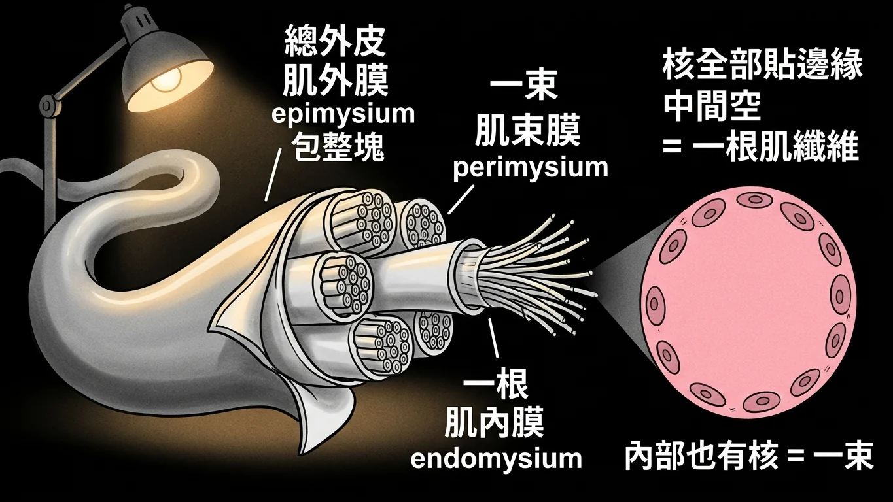
情境場景：一整條電纜、一束線、一根線——肌肉的三層外衣就是這樣包的。
故事
把一塊骨骼肌想成一條電纜 。
整條電纜外面有一層厚厚的總外皮 ，那是肌外膜 （epimysium）。剝開它，裡面是好幾束 電線，每一束外面又各自包了一層皮，那是肌束膜 （perimysium）。再剝開一束，裡面是一根一根 的細線，每一根外面還有一層薄得幾乎看不見的皮，那是肌內膜 （endomysium）。
外 → 束 → 根，三層由粗到細。
「那切片上怎麼分？」實習醫師問。
「看細胞核在哪裡 。」
「骨骼肌纖維是很多細胞融合成的，所以它的核全部被擠到最邊緣 ，貼著細胞膜排一圈。所以你在橫切片上看到一個粉紅色的圓，如果核只長在圓的邊緣、中間空空的 ——那就是一根肌纖維 ，它外面那層就是肌內膜 。」
「如果是一整束呢？」
「那是好幾根肌纖維擠在一起。粉紅色區域內部也會有核 ，因為那是別根纖維的核。這時候外面那層才是肌束膜 。」
113 年就有人為了這一題申覆——說圖上沒附倍率，分不出來是一根還是一束。老師的回答就是上面這句話：看核有沒有跑到中間去。
切片判讀
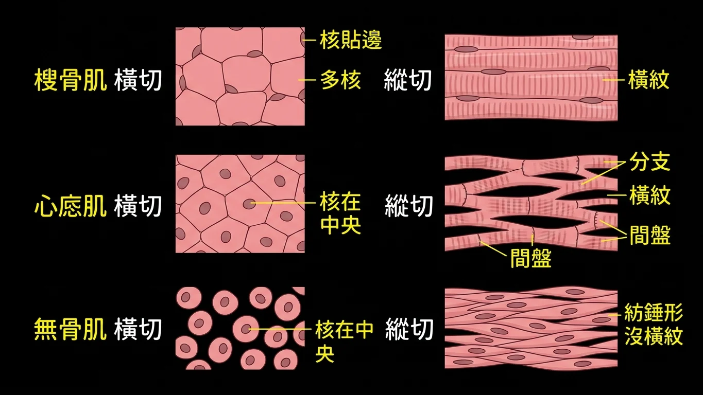
切片判讀：三種肌肉在橫切與縱切下的樣子，以及核的位置。
回到現實
113 年前面兩題是看圖題 ，考的是最基本的切片辨識。三種肌肉在切片上的差別：
骨骼肌 ：細胞很大、呈長條圓柱狀，有橫紋 ，多核且核全部在周邊 。橫切面是一個個多角形的粉紅色區塊，核貼在邊上。
心肌 ：有橫紋 ，但單核（偶爾雙核）且核在中央 ，細胞會分叉，細胞之間有間盤 （intercalated disc）。
平滑肌 ：沒有橫紋 ，細胞呈紡錘形 ，單核且核在中央 。縱切像一束交錯的梭形細胞，橫切則是大小不一的圓，只有切到細胞中段的那些才看得到核。
而三層結締組織的判斷，老師講得很具體：
詳解原文（113 第 15 題，申覆後維持原答案）:「如果是更小倍率的fascicle裡面含有很多muscle fiber，則粉紅色內部會有其他細胞核存在，而不會像題目附圖上這樣所有細胞核都在邊上，維持原答案(C)。」
「(B) perimysium(老師附的圖) ─ 粉紅色內部 & 邊緣都有細胞核 (C) endomysium ─ 只有邊緣有細胞核」
所以判準只有一句：核只在邊緣＝單根纖維＝肌內膜；核也出現在中間＝一整束＝肌束膜。
113 年 期中考 第 14 題 ｜ 圖片題
Observe the histological features. What is the correct combination of tissue species and section orientation in the figure?
(A) cross sectioned cardiac muscle
(B) longitudinal sectioned smooth muscle
(C) cross sectioned smooth muscle
(D) cross sectioned skeletal muscle
答案與詳解
中文題目： 觀察圖中的組織學特徵。圖中的組織種類與切面方向 的正確組合為下列何者？
(A) 橫切的心肌
(B) 縱切的平滑肌
(C) 橫切的平滑肌
(D) 橫切的骨骼肌
答案：(D)
原卷詳解欄留空 ，只給了答案與出處（ppt pg.6）。判準是多角形的粉紅色區塊＋核全部貼在邊緣 ——那是骨骼肌的橫切面。心肌核在中央、平滑肌沒有橫紋且細胞小得多。
出處：陳永佳-組織學-肌腱、韌帶、肌肉-ppt pg6 ｜ BM113_Block8期中考詳解.pdf 第 18 頁
113 年 期中考 第 15 題 ｜ 圖片題 ｜ 申覆後維持原答案
What is the structure indicated by the black arrow?
(A) epimysium
(B) perimysium
(C) endomysium
(D) adipocyte
答案與詳解
中文題目： 黑色箭頭所指的構造是什麼？
(A) 肌外膜
(B) 肌束膜
(C) 肌內膜
(D) 脂肪細胞
答案：(C)
詳解原文:「(B) perimysium(老師附的圖) ─ 粉紅色內部 & 邊緣都有細胞核 (C) endomysium ─ 只有邊緣有細胞核」
申覆結果（維持原答案）:「如果是更小倍率的fascicle裡面含有很多muscle fiber，則粉紅色內部會有其他細胞核存在，而不會像題目附圖上這樣所有細胞核都在邊上，維持原答案(C)。」
申覆主張圖沒附倍率、分不出是一根還是一束。老師的判準是核的分布 ：圖上所有核都在邊緣，代表那是單一條肌纖維 ，包住它的就是肌內膜。
出處：組織學-肌腱、韌帶、肌肉 陳永佳 ppt p.5,6 ｜ BM113_Block8期中考詳解.pdf 第 19 頁
二、三聯體：兩個終池夾一根管
情境場景
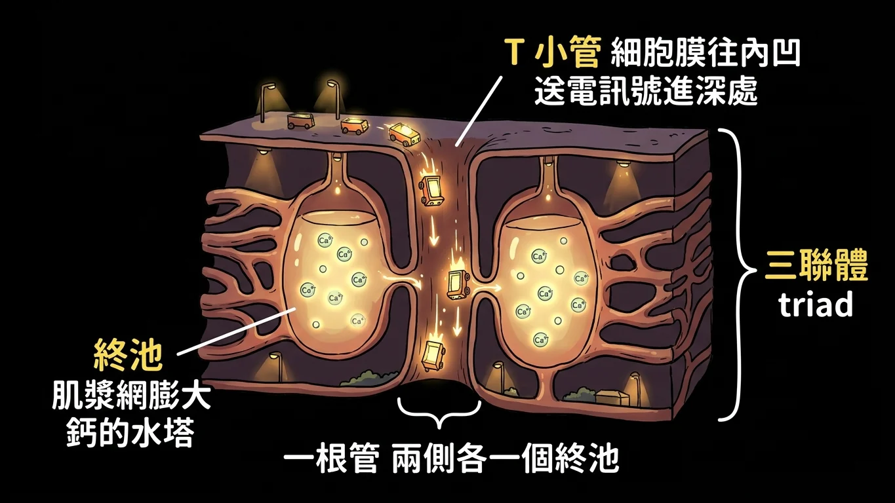
情境場景：一條把訊號送進深處的隧道，兩側各停一個鈣的水塔。
故事
骨骼肌纖維又粗又長。當電訊號沿著細胞膜跑過來時，細胞最深處的肌絲怎麼知道要收縮？
解法是挖隧道 。細胞膜往內凹陷、一路鑽進細胞深處，形成一條條橫向的管子，叫 T 小管 （T-tubule）。電訊號就順著隧道直接送進去。
而收縮真正需要的是鈣離子 。鈣被存放在細胞內一套特化的內質網裡，叫肌漿網 （sarcoplasmic reticulum）。肌漿網在靠近 T 小管的地方會膨大 成一個個儲水槽，那就是終池 （terminal cisternae）。
所以最後的配置是：一根 T 小管，兩側各貼著一個終池 。這三個湊在一起，就叫三聯體 （triad）。
「為什麼是兩個？」
「因為隧道有兩側，兩邊都要能放水。」
這個考點三年考了三次，每次換一種問法：111 年問「終池是由什麼形成的」，112 與 113 年直接問「三聯體由什麼組成」。答案永遠是同一張圖。
三聯體圖解
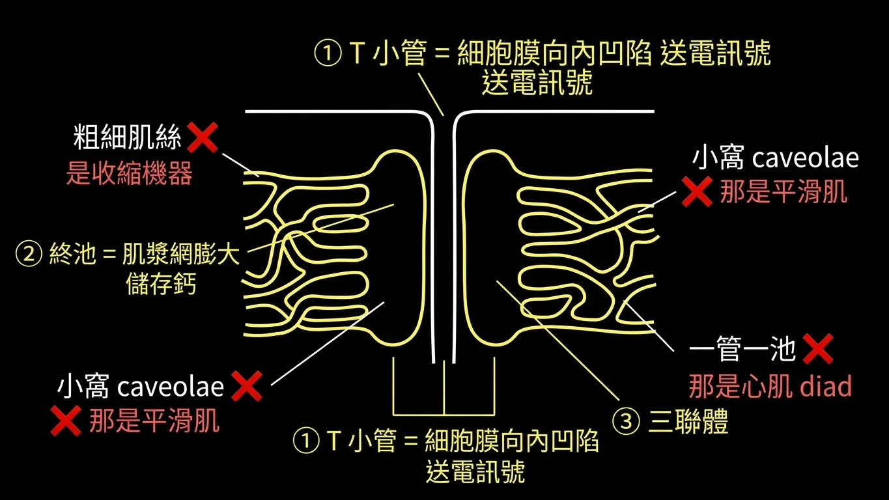
三聯體圖解：一根 T 小管加兩側的終池，終池由肌漿網膨大而成。
回到現實
詳解原文（111）:「ppt中可以看到terminal cisternae為sarcoplasmic reticulum的一部分。」
詳解原文（113）:「The complex of the T tubule and the two adjacent terminal cisternae is called a “Triad.”」
三句話記完：
① T 小管＝細胞膜向內凹陷 形成的橫向管道，負責把電訊號送進細胞深處。終池＝肌漿網（一種特化的滑面內質網）膨大而成 的鈣離子儲存槽。三聯體＝兩個終池夾住一根 T 小管 。
三年的干擾選項全部來自同一個池子：
・thick / thin filament（粗、細肌絲） ——那是收縮的機器，不是鈣的倉庫。invagination of sarcoplasm（肌漿內陷） ——凹陷進去的是細胞膜 ，不是肌漿。caveolae（小窩） ——那是平滑肌 用來取代 T 小管的構造，出現在骨骼肌的選項裡就是錯的。「一根 T 小管配一個終池」 ——那叫 diad（雙聯體） ，是心肌 的配置，不是骨骼肌。
補充（非詳解內容，但很好用）：骨骼肌 triad（三），心肌 diad（二）。 113 年的 (A) 就是把心肌的配置寫進骨骼肌的題目裡。
111 年 期中考 第 22 題
The structure terminal cisternae are formed by?
(A) thick filaments
(B) thin filament
(C) enlarged sarcoplasmic reticulum
(D) invagination of sarcoplasm
答案與詳解
中文題目： 終池這個構造是由什麼形成的？
(A) 粗肌絲
(B) 細肌絲
(C) 膨大的肌漿網
(D) 肌漿的內陷
答案：(C) enlarged sarcoplasmic reticulum
詳解原文:「ppt中可以看到terminal cisternae為sarcoplasmic reticulum的一部分。」
(D) 是最像的陷阱：內陷形成的是 T 小管，而且內陷的是「細胞膜」不是「肌漿」 。終池是肌漿網自己膨大出來的。
出處：陳永佳 組織學-肌腱、韌帶、肌肉(ppt pg.33) ｜ BM111 BLOCK-8 期中考詳解.pdf 第 19 頁
112 年 期中考 第 22 題
The structure triad is formed by?
(A) thin filament
(B) thick filaments
(C) two enlarged sarcoplasmic reticulum and one T-tubule
(D) two caveolae and endoplasmic reticulum (ER)
答案與詳解
中文題目： 三聯體這個構造由什麼組成？
(A) 細肌絲
(B) 粗肌絲
(C) 兩個膨大的肌漿網加一根 T 小管
(D) 兩個小窩加內質網
答案：C
原卷詳解欄留空 。二比一：兩個終池、一根 T 小管。 (D) 的 caveolae 是平滑肌的構造。
出處：陳永佳 肌腱、韌帶、肌肉組織學（ppt pg.18） ｜ BM112_Block 8 期中考(含申覆內容與結果).pdf 第 34 頁
113 年 期中考 第 25 題
In skeletal muscle, what components form a triad?
(A) One T-tubule and one terminal cisterna of sarcoplasmic reticulum
(B) One T-tubule and two thick filaments
(C) Two terminal cisternae of sarcoplasmic reticulum flanking one T-tubule
(D) Two caveolae and one smooth endoplasmic reticulum
答案與詳解
中文題目： 在骨骼肌中，三聯體由哪些成分組成？
(A) 一根 T 小管與一個肌漿網終池
(B) 一根 T 小管與兩條粗肌絲
(C) 兩個肌漿網終池夾著一根 T 小管
(D) 兩個小窩與一個滑面內質網
答案：(C)
詳解原文:「The complex of the T tubule and the two adjacent terminal cisternae is called a “Triad.”」
與 112 年第 22 題同一件事，選項寫得更精確。(A) 「一管一池」是心肌的雙聯體（diad） ，這裡是最主要的陷阱。
出處：組織學-肌腱、韌帶、肌肉 陳永佳 page15 ｜ BM113_Block8期中考詳解.pdf 第 36 頁
三、三種肌肉的比較表
情境場景
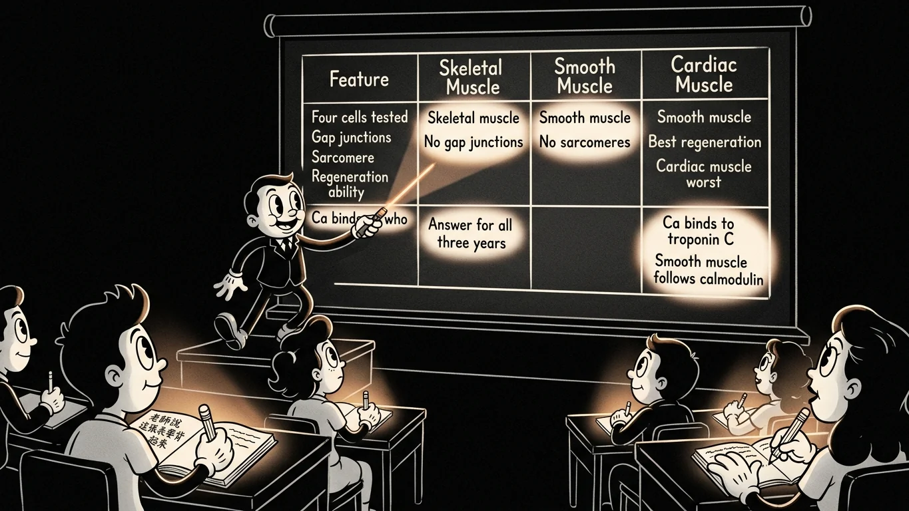
情境場景：老師直接說了——這張表要背起來。
故事
這一題三年考了三次，而且 113 年的詳解直接把底牌掀了：
詳解原文（113）:「這題是將BM112題目稍作調整 同時老師上課有特別提示三種肌肉比較的表格需要做記憶」
所以這一章沒有故事可講，只有一張表。但那張表裡真正被拿去出題的只有四格 ，其餘都是陪襯。
第一格：間隙連接。 心肌有（靠間盤上的間隙連接同步收縮）、平滑肌有（整片一起蠕動）、骨骼肌沒有 。骨骼肌每一條纖維都由自己的神經末梢單獨指揮，不需要跟鄰居通訊。這一格三年被考了三次，全部是答案。
第二格：肌節。 骨骼肌有、心肌有（所以兩者都有橫紋）、平滑肌沒有 。平滑肌的肌絲是斜著拉在緻密體之間的，不排成整齊的肌節，所以看不到橫紋。
第三格：再生能力。 平滑肌最好 （可以自由再生）；骨骼肌靠衛星細胞、受傷時有限度地再生；心肌最差 。
第四格：收縮的鈣接在誰身上。 骨骼肌與心肌都是鈣結合到旋轉素 C（troponin C） ；平滑肌沒有旋轉素，走的是攜鈣素（calmodulin） 那條路。
三肌對照表
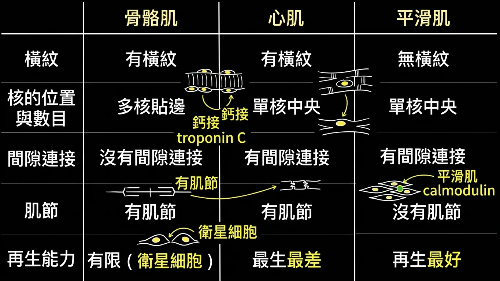
三肌對照表：橫紋、核的位置與數目、間隙連接、肌節、再生能力。
回到現實
三年的正確答案都是同一句：骨骼肌沒有間隙連接。
詳解原文（111）:「骨骼肌並沒有cell to cell junctions」
詳解原文（112）:「(B) skeletal muscle cells absent the gap junctions」
三年的句子被改寫成三種說法，但骨骼肌永遠在裡面：
・111 年：All of the three types of muscle present gap junctions → 錯skeletal and smooth muscle cells present the gap junctions → 錯skeletal muscle cells can communicate via gap junctions → 錯
而每一年陪襯的三個「正確敘述」也值得記下來，因為它們會輪流變成別題的選項：
・平滑肌沒有肌節 （111、112 都出現，皆為正確敘述）鈣結合到 troponin C 啟動骨骼肌與心肌的收縮 （112、113 都出現，皆為正確敘述）心肌有橫紋且不隨意 （113 年，正確）平滑肌具再生能力 （113 年，正確）
申覆重點
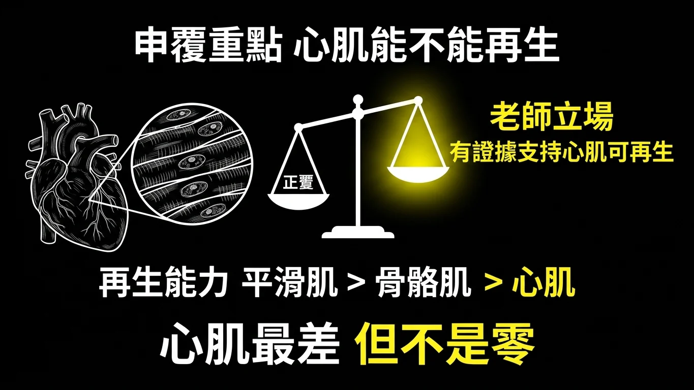
申覆重點：心肌到底能不能再生，老師的立場是「有證據支持」。
這個申覆值得看
111 年有人針對 (A)「受傷時骨骼肌與心肌可以再生」提出申覆，理由是老師自己的講義 pg.45 把心肌的再生欄寫成 NONE ，而且成人心肌再生目前學界尚無定論。
申覆結果：維持原答案。 老師的回覆是——
申覆結果（老師回覆）:「因A選項雖如同學所說目前未有定論，但仍有不少證據支持cardiac regeneration的發現。」（並引用 Bergmann 等 2009 Science、Senyo 等 2013 Nature、Mollova 等 2013 PNAS 三篇）
所以在這位老師的考卷上：「心肌完全不能再生」不要當成絕對真理 ，但「骨骼肌沒有間隙連接」永遠是那個要選的錯項 。遇到這種題型，先找間隙連接那一句，找到就交卷，不要跟再生能力糾纏。
111 年 期中考 第 23 題 ｜ 申覆後維持原答案
Which of the following description is false?
(A) When injury, the skeletal muscle fibers and cardiomyocytes can undergo regeneration
(B) All of the three types of muscle present gap junctions
(C) Smooth muscle fibers do not present sarcomere
(D) In normal conditions, only the smooth muscle fibers could undergo regeneration freely.
答案與詳解
中文題目： 下列敘述何者錯誤 ？
(A) 受傷時，骨骼肌纖維與心肌細胞可以進行再生。
(B) 三種肌肉都具有間隙連接。
(C) 平滑肌纖維沒有肌節。
(D) 正常情況下，只有平滑肌纖維能自由地進行再生。
答案：(B) All of the three types of muscle present gap junctions
詳解原文:「骨骼肌並沒有cell to cell junctions」
申覆結果（維持原答案）:「因A選項雖如同學所說目前未有定論，但仍有不少證據支持cardiac regeneration的發現。」
骨骼肌沒有間隙連接 ，所以「三種都有」是錯的。(C)(D) 兩句都正確。
出處：陳永佳 組織學-肌腱、韌帶、肌肉(ppt pg.42) ｜ BM111 BLOCK-8 期中考詳解.pdf 第 20 頁
112 年 期中考 第 23 題
Which of the following description is FALSE?
(A) Only when injury, the skeletal muscle fibers and cardiomyocytes can undergo regeneration
(B) skeletal and smooth muscle cells present the gap junctions
(C) smooth muscle fibers do not present sarcomere
(D) By binding of calcium to troponin C, skeletal muscle and cardiac muscle start to contract.
答案與詳解
中文題目： 下列敘述何者錯誤 ？
(A) 只有在受傷時，骨骼肌纖維與心肌細胞才會進行再生。
(B) 骨骼肌與平滑肌細胞具有間隙連接。
(C) 平滑肌纖維沒有肌節。
(D) 鈣結合到旋轉素 C 後，骨骼肌與心肌開始收縮。
答案：B
詳解原文:「(B) skeletal muscle cells absent the gap junctions」
這年把「三種都有」縮小成「骨骼肌與平滑肌都有」，只要句子裡出現骨骼肌＋間隙連接，就是錯的 。
出處：陳永佳 肌腱、韌帶、肌肉組織學（ppt pg.43） ｜ BM112_Block 8 期中考(含申覆內容與結果).pdf 第 35 頁
113 年 期中考 第 26 題
Which of the following statements about different muscle types is FALSE?
(A) smooth muscle fibers have regeneration ability
(B) skeletal muscle cells can communicate via gap junctions
(C) skeletal muscle contraction is initiated by calcium binding to troponin C
(D) cardiac muscle fibers are striated and involuntary
答案與詳解
中文題目： 下列關於不同肌肉類型的敘述，何者錯誤 ？
(A) 平滑肌纖維具有再生能力。
(B) 骨骼肌細胞可以透過間隙連接互相溝通。
(C) 骨骼肌的收縮由鈣結合到旋轉素 C 啟動。
(D) 心肌纖維有橫紋且屬不隨意肌。
答案：(B)
詳解原文:「這題是將BM112題目稍作調整 同時老師上課有特別提示三種肌肉比較的表格需要做記憶」
第三年、第三種寫法，答案還是同一句。老師自己在詳解裡說了這是 112 年的改編題。
出處：組織學-肌腱、韌帶、肌肉 陳永佳 ｜ BM113_Block8期中考詳解.pdf 第 36 頁
四、平滑肌的四個特別之處
情境場景
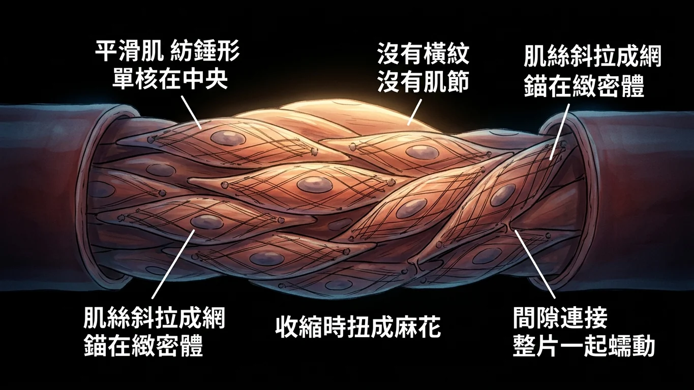
情境場景：沒有整齊的隊伍，卻能把整條管子擠成一團。
故事
平滑肌是三兄弟裡最不像肌肉的那一個。它沒有橫紋、沒有肌節、細胞小得多，卻能把整條腸子或整條血管擠得變形。
它的做法完全不同。骨骼肌是把肌絲排成整齊的隊伍（肌節），一節一節同時縮短；平滑肌則是把肌絲斜拉成一張網 ，兩端固定在細胞裡外散布的錨點 上。那些錨點叫緻密體 （dense body），功能相當於骨骼肌的 Z 線。
肌絲一收，整顆細胞就扭成麻花 ——這就是為什麼平滑肌收縮時細胞會皺縮、而不是整齊地縮短。
另外三件事也很好記，因為每一件都跟骨骼肌相反：
・細胞形狀是紡錘形 （fusiform），中間胖兩頭尖。單核，而且核在細胞正中央 （骨骼肌是多核、核在邊緣）。間隙連接 溝通，所以能整片一起蠕動。
還有兩個細節每年都拿來出題：平滑肌的滑面內質網很發達 （因為它要自己管鈣），而它的粗肌絲排列是側極性 （side-polar）——兩側的肌凝蛋白頭朝相反方向排，不像骨骼肌那樣中央有一段無頭的裸區。也因為這樣，它沒有橫紋 。
平滑肌要點
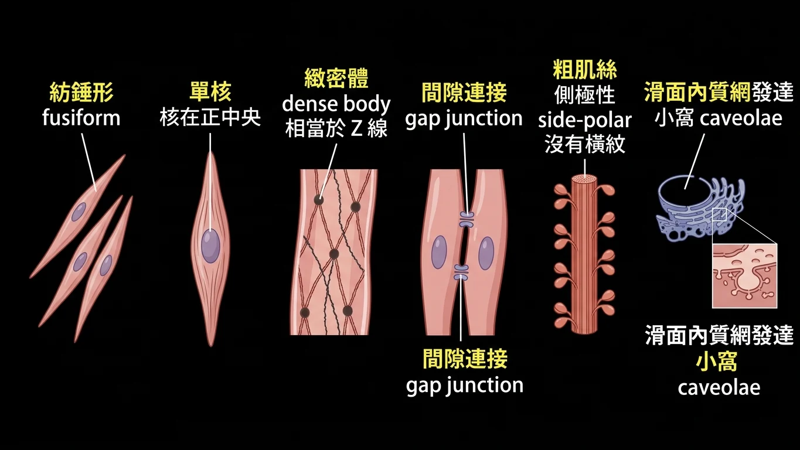
平滑肌要點：紡錘形、核在中央、緻密體、間隙連接、側極性粗肌絲。
回到現實
113 年的詳解把整組事實列成四條，直接抄下來：
詳解原文（113）:「下表請熟記 (A)只有平滑肌有Dense body這項Special feature (B)骨骼肌心肌才有Sacromere (C)平滑肌細胞的核在Central (D)平滑肌的粗肌絲排列為Side-polar沒有Striated」
再加上 111 年補的兩條：
詳解原文（111）:「(A) by an gap junction (C) present well-developed smooth ER (D) The connective tissue of smooth fibers also contains endomysium, sheaths and bundles.」
整理成平滑肌的六個特徵 ：
① 紡錘形 細胞，細胞間靠間隙連接 溝通（不是黏著連接、不是胞橋小體）。嗜伊紅 （eosinophilic，粉紅色），核在中央 、單核 。緻密體 ——這是只有平滑肌才有 的特徵。滑面內質網發達 。沒有肌節 、沒有橫紋 。側極性 排列。
結締組織那一條要小心：平滑肌有肌內膜 （endomysium），但沒有骨骼肌那種 perimysium／epimysium 的三層命名；111 年的 (D) 就是把骨骼肌的名詞硬套上去而變錯。
111 年 期中考 第 24 題
Which of the following statements concerning smooth muscle is true?
(A) Cells are fusiform shaped and communicate with each other by an adherent junction.
(B) The cytoplasm of smooth muscle is eosinophilic and its nuclei are localized in the central of the cell.
(C) The fibers have dense bodies but do not present well-developed smooth ER.
(D) The connective tissue of smooth fibers also contains endomysium and perimysium.
答案與詳解
中文題目： 關於平滑肌的敘述，何者正確 ？
(A) 細胞呈紡錘形，彼此以黏著連接溝通。
(B) 平滑肌的細胞質嗜伊紅，細胞核位於細胞中央。
(C) 纖維具有緻密體，但沒有發達的滑面內質網。
(D) 平滑肌纖維的結締組織也包含肌內膜與肌束膜。
答案：(B)
詳解原文:「(A) by an gap junction (C) present well-developed smooth ER (D) The connective tissue of smooth fibers also contains endomysium, sheaths and bundles.」
三個錯項各改一處：是間隙連接不是黏著連接 、滑面內質網是發達的 、結締組織的命名不是 perimysium 。
出處：陳永佳 組織學-肌腱、韌帶、肌肉(ppt pg.44) ｜ BM111 BLOCK-8 期中考詳解.pdf 第 21 頁
112 年 期中考 第 24 題 ｜ 申覆後開放 (B)
Which of the following statements concerning smooth muscle is TRUE?
(A) cells are fusiform shaped and communicate with each other by the desmosomes
(B) The fibers have dense bodies and well-developed smooth ER
(C) The cytoplasm of smooth muscle is basophilic and the nucleus is localized in the central of the cell
(D) the side-polar thick filament are present in smooth muscle
答案與詳解
中文題目： 關於平滑肌的敘述，何者正確 ？
(A) 細胞呈紡錘形，彼此以胞橋小體溝通。
(B) 纖維具有緻密體與發達的滑面內質網。
(C) 平滑肌的細胞質嗜鹼，細胞核位於細胞中央。
(D) 平滑肌具有側極性的粗肌絲。
答案：D（申覆後 B 亦開放給分）
詳解原文:「(A)cells are fusiform shaped and communicate with each other by the gap junctions (B)The fibers have dense bodies and well-developed smooth ER 此選項應該也可給分 (C)The cytoplasm of smooth muscle is eosinophilic and the nucleus is localized in the central of the cell」
(A) 該是間隙連接 不是胞橋小體；(C) 該是嗜伊紅 不是嗜鹼。而 (B) 其實也完全正確，所以老師開放給分——這是一題「有兩個正確答案」的題目 。
出處：陳永佳 肌腱、韌帶、肌肉組織學（ppt pg.37） ｜ BM112_Block 8 期中考(含申覆內容與結果).pdf 第 36 頁
113 年 期中考 第 27 題
Which of the following statements concerning smooth muscle is TRUE?
(A) The fibers have dense bodies and well-developed smooth ER
(B) Smooth muscle fibers contain sarcomeres arranged like skeletal muscle
(C) Nuclei are located at the periphery of the cell
(D) Thick filaments are bipolar and cross-striated
答案與詳解
中文題目： 關於平滑肌的敘述，何者正確 ？
(A) 纖維具有緻密體與發達的滑面內質網。
(B) 平滑肌纖維含有像骨骼肌那樣排列的肌節。
(C) 細胞核位於細胞周邊。
(D) 粗肌絲呈雙極性且具橫紋。
答案：(A)
詳解原文:「下表請熟記 (A)只有平滑肌有Dense body這項Special feature (B)骨骼肌心肌才有Sacromere (C)平滑肌細胞的核在Central (D)平滑肌的粗肌絲排列為Side-polar沒有Striated」
(A) 這一句就是 112 年被開放給分的那一句，這年直接變成標準答案。三個錯項分別把肌節 、核的位置 、粗肌絲的排列 換成骨骼肌的版本。
出處：組織學-肌腱、韌帶、肌肉 陳永佳 ｜ BM113_Block8期中考詳解.pdf 第 37 頁
五、纖維型別：耐力型與爆發型
情境場景
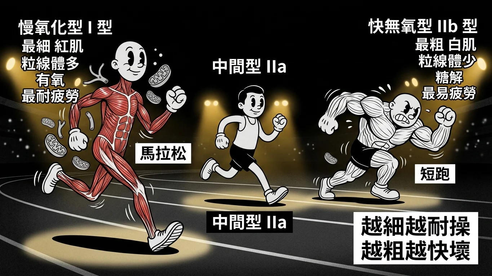
情境場景：馬拉松選手與短跑選手，一個細而持久、一個粗而爆發。
故事
骨骼肌纖維分兩個極端，中間再放一個過渡型。
慢氧化型 （slow oxidative，第 I 型）是馬拉松選手 ：纖維最細 、粒線體多、肌紅蛋白多所以顏色偏紅、微血管密、靠有氧代謝 。收縮慢，但最耐疲勞 。
快無氧型 （fast anaerobic / fast glycolytic，第 IIb 型）是短跑選手 ：纖維最粗 、粒線體少、肌紅蛋白少所以顏色偏白、靠糖解 。收縮快、力量大，但最容易疲勞 。
中間型 （intermediate / fast oxidative，第 IIa 型）介於兩者之間。
所以整組的規律非常乾淨：越細越耐操，越粗越快壞。
三年考三次，兩次問「最粗、最易疲勞」（答案是快無氧型），一次問「最細、最耐疲勞」（答案是慢氧化型）。只要記住這條軸，兩端都能答。
順帶一提，111 年那題原本答案誤植成 (C) ，有同學拿 BRS 的表格申覆，老師直接更正為 (D)。這是本科唯一一次答案被改掉 的題目。
纖維型別對照
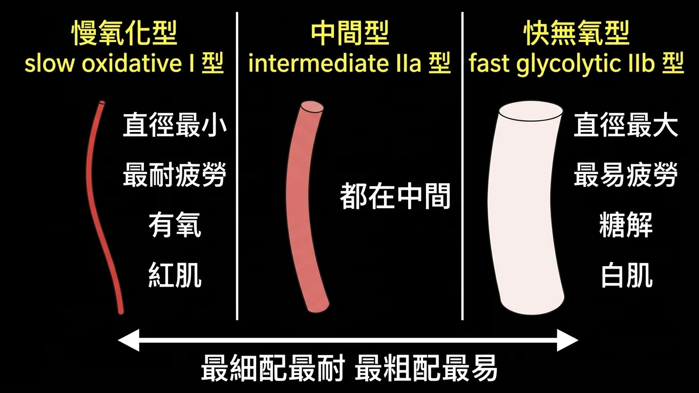
纖維型別對照：慢氧化型最細最耐疲勞，快無氧型最粗最易疲勞。
回到現實
詳解原文（111）:「由圖可知 fast anaerobic fiber 對 fatigue risistance 最低」
申覆結果（111，C → D）:「原答案誤植為C，修正為D」
三個型別的固定屬性：
慢氧化型（slow oxidative，I 型） ：直徑最小 、最耐疲勞 、有氧代謝、粒線體與肌紅蛋白多、紅肌。
中間型（intermediate / fast oxidative，IIa 型） ：各項都在中間。
快無氧型（fast anaerobic / fast glycolytic，IIb 型） ：直徑最大 、最易疲勞 、糖解代謝、粒線體與肌紅蛋白少、白肌。
解題時只要圈出題幹裡的兩個形容詞——「粗細」與「耐不耐疲勞」永遠同向配對 ：最細配最耐、最粗配最易。三年三題全部套得進去。
111 年 期中考 第 25 題 ｜ 申覆後 C → D
Which of the following skeletal muscle fibers tend to fatigue?
(A) slow oxidative
(B) intermediate
(C) fast aerobic fibers
(D) fast anaerobic fibers
答案與詳解
中文題目： 下列哪一種骨骼肌纖維容易疲勞 ？
(A) 慢氧化型
(B) 中間型
(C) 快有氧型
(D) 快無氧型
答案：(D) fast anaerobic fibers（申覆後由 C 更正為 D）
詳解原文:「由圖可知 fast anaerobic fiber 對 fatigue risistance 最低」
申覆結果（C → D，老師回覆）:「原答案誤植為C，修正為D」
「無氧」就是靠糖解，乳酸一堆積就撐不住——最快疲勞的一定是無氧那一型 。
出處：陳永佳 組織學-肌腱、韌帶、肌肉(ppt pg.42) ｜ BM111 BLOCK-8 期中考詳解.pdf 第 22 頁
112 年 期中考 第 25 題
Which of the following skeletal muscle fibers exhibit the smallest fiber diameter and are resistant to fatigue?
(A) slow oxidative
(B) fast aerobic fibers
(C) intermediate
(D) fast anaerobic fibers
答案與詳解
中文題目： 下列哪一種骨骼肌纖維直徑最小 且耐疲勞 ？
(A) 慢氧化型
(B) 快有氧型
(C) 中間型
(D) 快無氧型
答案：A
原卷詳解欄留空 。這年問的是軸的另一端：最細＋最耐疲勞＝慢氧化型 。
出處：陳永佳 肌腱、韌帶、肌肉組織學（ppt pg.16） ｜ BM112_Block 8 期中考(含申覆內容與結果).pdf 第 37 頁
113 年 期中考 第 28 題
Which type of skeletal muscle fibers have the largest diameter and fatigue most easily?
(A) Slow oxidative fibers
(B) Fast oxidative fibers
(C) Intermediate fibers
(D) Fast glycolytic (anaerobic) fibers
答案與詳解
中文題目： 哪一種骨骼肌纖維直徑最大 且最容易疲勞 ？
(A) 慢氧化型
(B) 快氧化型
(C) 中間型
(D) 快糖解（無氧）型
答案：(D)
詳解原文:「螢光筆處」
與 112 年第 25 題的兩個形容詞同時反轉 ：最粗＋最易疲勞＝快糖解（無氧）型。這年直接把 glycolytic 與 anaerobic 並列寫出，等於把答案講一半了。
出處：組織學-肌腱、韌帶、肌肉 陳永佳 ppt p17 ｜ BM113_Block8期中考詳解.pdf 第 38 頁
六、收縮：誰擋住誰、哪一帶會變
情境場景
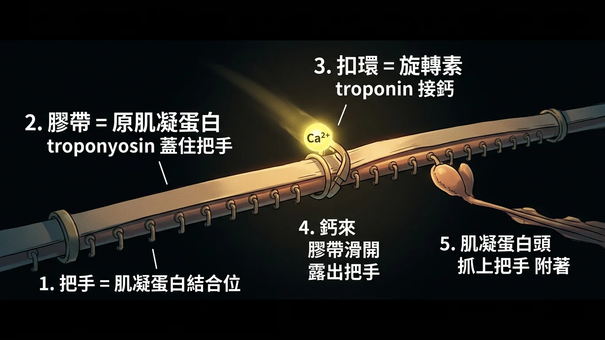
情境場景：門把上蓋著一條膠帶，鈣一來就把膠帶拉開。
故事
細肌絲（actin）上有一排把手 ——那是給肌凝蛋白頭抓的結合位。肌肉放鬆的時候，這排把手上蓋著一條長長的膠帶 ，叫原肌凝蛋白 （tropomyosin）。抓不到把手，就拉不動。
膠帶上每隔一段釘著一個扣環，叫旋轉素 （troponin）。當鈣離子從終池衝出來、結合到旋轉素 C 上，扣環一轉，整條膠帶就滑開 ，把手露出來。
接下來就是橫橋循環 ，四個動作固定順序：
① 附著 （attachment）：肌凝蛋白頭抓上剛露出來的把手。② 脫離 （release）：ATP 接上肌凝蛋白頭，頭放手。③ 上膛 （bending）：ATP 被水解，頭重新扳回高能位置。④ 出力 （force generation）：頭旋轉、把細肌絲往肌節中央拉——這一下就是動力衝程 。
113 年問「哪一件事先 發生」，答案就是①附著 。
而肌絲滑動的結果，反映在顯微鏡下的條帶上。這裡只要記一句話：會變的是「不重疊的那些區域」，不會變的是「肌絲本身的長度」。
・A 帶 ＝粗肌絲的全長 → 不變 （粗肌絲沒有變短）M 線 ＝粗肌絲中央互相連結的線 → 不變 H 區 ＝粗肌絲中央沒有 被細肌絲蓋到的段落 → 收縮時變窄 I 帶 ＝細肌絲沒有 被粗肌絲蓋到的段落 → 收縮時變窄 Z 線 ＝肌節的兩端 → 兩條 Z 線互相靠近 ，但線本身始終看得見
肌節變化
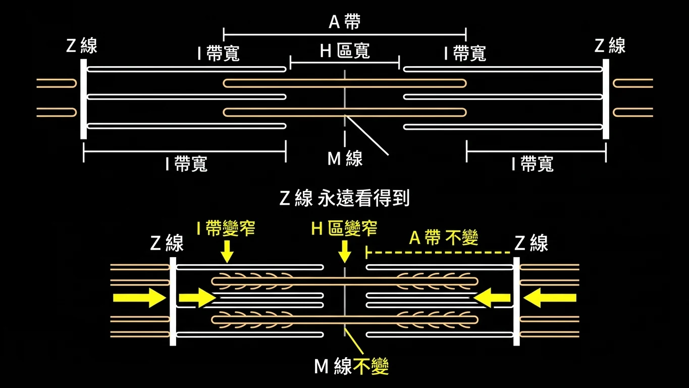
肌節變化：收縮時 H 區與 I 帶變窄，A 帶與 M 線不變。
回到現實
111 年的詳解把四條列得最完整：
詳解原文（111）:「骨骼肌收縮時: (A) M line是最中間的線-->不變。(B) H Zone是放鬆時粗肌絲未與細肌絲重疊的部分-->收縮時變窄。(C) A Band是粗肌絲的區域，即暗帶-->收縮時不變。(D) I Band是細肌絲未與粗肌絲重疊的區域，即亮帶-->收縮時變短。」
113 年把同一件事反過來問「放鬆時」 ：
詳解原文（113）:「(A) Z line 不論收縮、放鬆皆可見 (B) A band 不論收縮、放鬆皆等長 (C) 正確 (D) 放鬆時並不重疊」
所以整組只要記住這張對照：
收縮時： H 區變窄 、I 帶變窄 、A 帶不變 、M 線不變 、Z 線互相靠近 。放鬆到極致時： H 區與 I 帶最寬 、A 帶仍不變 、Z 線仍看得見 、粗細肌絲不會完全重疊 。
三年三題全部在同一張圖上打轉，只換了兩件事：問收縮還是放鬆 、把正確答案挪到哪個代號 。作答時先在題幹圈出「contraction／relaxation」，再去找 H 區或 I 帶那一句。
111 年 期中考 第 26 題
In resting muscle, which of the following proteins masks the myosin-binding site on the actin molecule?
(A) myosin head
(B) nebulin
(C) tropomodulin
(D) tropomyosin
答案與詳解
中文題目： 在靜止的肌肉中，下列哪一種蛋白質遮住了肌動蛋白分子上的肌凝蛋白結合位？
(A) 肌凝蛋白頭
(B) 伴肌動蛋白
(C) 原肌球調節蛋白
(D) 原肌凝蛋白
答案：(D) tropomyosin
詳解原文:「由此可知在resting state， tropomyosin蓋住actin上面的myosin-binding site。」
兩個干擾選項都是細肌絲上的其他配角：nebulin 沿著細肌絲決定它的長度，tropomodulin 封住細肌絲的負端。只有 tropomyosin 是那條蓋住把手的膠帶。
出處：陳永佳 組織學-肌腱、韌帶、肌肉(ppt pg.20) ｜ BM111 BLOCK-8 期中考詳解.pdf 第 22 頁
112 年 期中考 第 26 題
In resting muscle, which of the following proteins masks the myosin-binding site on the actin molecule?
(A) myosin head
(B) troponin
(C) tropomodulin
(D) tropomyosin
答案與詳解
中文題目： 在靜止的肌肉中，下列哪一種蛋白質遮住了肌動蛋白分子上的肌凝蛋白結合位？
(A) 肌凝蛋白頭
(B) 旋轉素
(C) 原肌球調節蛋白
(D) 原肌凝蛋白
答案：D
原卷詳解欄留空 。與 111 年第 26 題題幹逐字相同 ，只把 (B) 從 nebulin 換成 troponin。旋轉素是那個「扣環」，負責接鈣、拉動膠帶；真正蓋住把手的還是原肌凝蛋白。
出處：陳永佳 肌腱、韌帶、肌肉組織學（ppt pg.9） ｜ BM112_Block 8 期中考(含申覆內容與結果).pdf 第 38 頁
113 年 期中考 第 29 題
According to the sliding filament theory, which event occurs first during cross-bridge cycling in skeletal muscle contraction?
(A) Hydrolysis of ATP re-cocks the myosin head to its high-energy state
(B) Myosin head pivots, pulling the actin filament toward the center of the sarcomere (power stroke)
(C) ATP binds to the myosin head, causing detachment from actin
(D) Myosin head binds to the exposed active site on actin after tropomyosin moves away
答案與詳解
中文題目： 依據肌絲滑動學說，骨骼肌收縮的橫橋循環中，哪一個事件最先 發生？
(A) ATP 水解使肌凝蛋白頭重新扳回高能狀態。
(B) 肌凝蛋白頭旋轉，把肌動蛋白絲拉向肌節中央（動力衝程）。
(C) ATP 結合到肌凝蛋白頭，使其脫離肌動蛋白。
(D) 原肌凝蛋白移開後，肌凝蛋白頭結合到肌動蛋白上暴露的活性位。
答案：(D)
詳解原文:「(A) 3. Bending (B) 4. Force generation (C) 2. Release (D) 1. Attachment」
四個選項就是循環的四個步驟被打亂：附著 → 脫離 → 上膛 → 出力 。題目問「最先」，答案是附著 。
出處：組織學-肌腱、韌帶、肌肉 陳永佳 ppt 21 ｜ BM113_Block8期中考詳解.pdf 第 39 頁
111 年 期中考 第 27 題
Which of the following statements is true when skeletal muscle contraction?
(A) M line becomes shorter
(B) H zone becomes narrower
(C) A band becomes wider
(D) I band becomes wider
答案與詳解
中文題目： 骨骼肌收縮時，下列敘述何者正確 ？
(A) M 線變短。
(B) H 區變窄。
(C) A 帶變寬。
(D) I 帶變寬。
答案：(B) H zone becomes narrower
詳解原文:「(A) M line是最中間的線-->不變。(B) H Zone是放鬆時粗肌絲未與細肌絲重疊的部分-->收縮時變窄。(C) A Band是粗肌絲的區域，即暗帶-->收縮時不變。(D) I Band是細肌絲未與粗肌絲重疊的區域，即亮帶-->收縮時變短。」
(D) 的方向反了——I 帶收縮時是變窄不是變寬 。
出處：陳永佳 組織學-肌腱、韌帶、肌肉(ppt pg.28) ｜ BM111 BLOCK-8 期中考詳解.pdf 第 23 頁
112 年 期中考 第 27 題
Which of the following statements is TRUE when skeletal muscle contraction?
(A) M line becomes shorter
(B) I band becomes wider
(C) H zone becomes narrower
(D) A band becomes wider
答案與詳解
中文題目： 骨骼肌收縮時，下列敘述何者正確 ？
(A) M 線變短。
(B) I 帶變寬。
(C) H 區變窄。
(D) A 帶變寬。
答案：C
詳解原文:「(A)M line 粗肌絲中間互相連結的構造，不會變 (B)I band 肌節中顏色較淺（細肌絲未與粗肌絲重疊）的地方，會變窄 (C)正確 (D)A band細肌絲與粗肌絲重疊的地方，不會變」
與 111 年第 27 題四個選項完全相同 ，只把 (B)(C) 對調，於是答案從 (B) 變成 (C)。不要背字母。
出處：陳永佳 肌腱、韌帶、肌肉組織學 (ppt pg.27) ｜ BM112_Block 8 期中考(含申覆內容與結果).pdf 第 38 頁
113 年 期中考 第 30 題
In a skeletal muscle fiber at maximal relaxation, which of the following is TRUE about the sarcomere structure?
(A) Z lines are no longer visible under the microscope
(B) The A band becomes longer than in contraction
(C) The H zone and I band are at their widest extent
(D) Thick and thin filaments completely overlap
答案與詳解
中文題目： 骨骼肌纖維在最大放鬆 狀態時，關於肌節結構的敘述何者正確 ？
(A) 顯微鏡下已看不到 Z 線。
(B) A 帶比收縮時更長。
(C) H 區與 I 帶處於最寬的狀態。
(D) 粗肌絲與細肌絲完全重疊。
答案：(C)
詳解原文:「(A) Z line 不論收縮、放鬆皆可見 (B) A band 不論收縮、放鬆皆等長 (C) 正確 (D) 放鬆時並不重疊」
同一張圖反過來問 ：收縮時 H 區與 I 帶變窄，那麼放鬆到極致時它們就是最寬 。(B) 再次確認 A 帶永遠不變 。
出處：組織學-肌腱、韌帶、肌肉 陳永佳 ppt pg. 24 ｜ BM113_Block8期中考詳解.pdf 第 40 頁
九、歷年考題總複習
依年度由新到舊、同年依原始題號排列。共 20 題（111／112 期中考各 6 題、113 期中考 8 題）。紅框 ＝同一考點在兩個以上年度重複出現。
113 年 期中考 第 14 題
113 年 期中考 第 14 題 ｜ 來源答案欄
Observe the histological features. What is the correct combination of tissue species and section orientation in the figure?
(A) cross sectioned cardiac muscle (B) longitudinal sectioned smooth muscle (C) cross sectioned smooth muscle (D) cross sectioned skeletal muscle 答案與詳解
中文題目： 觀察圖中的組織學特徵。圖中的組織種類與切面方向 的正確組合為下列何者？
(A) 橫切的心肌
(B) 縱切的平滑肌
(C) 橫切的平滑肌
(D) 橫切的骨骼肌
答案：(D)
多角形粉紅區塊加上核全部貼邊，就是骨骼肌的橫切面。 ｜ BM113_Block8期中考詳解 第 18 頁
113 年 期中考 第 15 題
What is the structure indicated by the black arrow?
(A) epimysium (B) perimysium (C) endomysium (D) adipocyte 答案與詳解
中文題目： 黑色箭頭所指的構造是什麼？
(A) 肌外膜
(B) 肌束膜
(C) 肌內膜
(D) 脂肪細胞
答案：(C)
核只在邊緣代表那是單一條肌纖維，包住它的是肌內膜；申覆維持原答案。 ｜ BM113_Block8期中考詳解 第 19 頁
113 年 期中考 第 25 題 重複考點 ×3
同考點：111 第22題、112 第22題 — 三聯體與終池：兩個終池夾一根 T 小管，終池是肌漿網膨大而成
In skeletal muscle, what components form a triad?
(A) One T-tubule and one terminal cisterna of sarcoplasmic reticulum (B) One T-tubule and two thick filaments (C) Two terminal cisternae of sarcoplasmic reticulum flanking one T-tubule (D) Two caveolae and one smooth endoplasmic reticulum 答案與詳解
中文題目： 在骨骼肌中，三聯體由哪些成分組成？
(A) 一根 T 小管與一個肌漿網終池
(B) 一根 T 小管與兩條粗肌絲
(C) 兩個肌漿網終池夾著一根 T 小管
(D) 兩個小窩與一個滑面內質網
答案：(C)
兩個終池夾一根 T 小管；(A) 的一管一池是心肌的雙聯體。 ｜ BM113_Block8期中考詳解 第 36 頁
113 年 期中考 第 26 題 重複考點 ×3
同考點：111 第23題、112 第23題 — 三種肌肉的比較表，哪一句錯——骨骼肌沒有間隙連接
Which of the following statements about different muscle types is FALSE?
(A) smooth muscle fibers have regeneration ability (B) skeletal muscle cells can communicate via gap junctions (C) skeletal muscle contraction is initiated by calcium binding to troponin C (D) cardiac muscle fibers are striated and involuntary 答案與詳解
中文題目： 下列關於不同肌肉類型的敘述，何者錯誤 ？
(A) 平滑肌纖維具有再生能力。
(B) 骨骼肌細胞可以透過間隙連接互相溝通。
(C) 骨骼肌的收縮由鈣結合到旋轉素 C 啟動。
(D) 心肌纖維有橫紋且屬不隨意肌。
答案：(B)
第三年第三種寫法，答案還是骨骼肌沒有間隙連接。 ｜ BM113_Block8期中考詳解 第 36 頁
113 年 期中考 第 27 題 重複考點 ×3
同考點：111 第24題、112 第24題 — 平滑肌的敘述何者正確：緻密體、發達的平滑內質網、核在中央、側極性粗肌絲
Which of the following statements concerning smooth muscle is TRUE?
(A) The fibers have dense bodies and well-developed smooth ER (B) Smooth muscle fibers contain sarcomeres arranged like skeletal muscle (C) Nuclei are located at the periphery of the cell (D) Thick filaments are bipolar and cross-striated 答案與詳解
中文題目： 關於平滑肌的敘述，何者正確 ？
(A) 纖維具有緻密體與發達的滑面內質網。
(B) 平滑肌纖維含有像骨骼肌那樣排列的肌節。
(C) 細胞核位於細胞周邊。
(D) 粗肌絲呈雙極性且具橫紋。
答案：(A)
緻密體加發達的滑面內質網——就是 112 年被開放給分的那一句。 ｜ BM113_Block8期中考詳解 第 37 頁
113 年 期中考 第 28 題 重複考點 ×3
同考點：111 第25題、112 第25題 — 骨骼肌纖維型別：慢氧化型最細最耐疲勞、快無氧型最粗最易疲勞
Which type of skeletal muscle fibers have the largest diameter and fatigue most easily?
(A) Slow oxidative fibers (B) Fast oxidative fibers (C) Intermediate fibers (D) Fast glycolytic (anaerobic) fibers 答案與詳解
中文題目： 哪一種骨骼肌纖維直徑最大 且最容易疲勞 ？
(A) 慢氧化型
(B) 快氧化型
(C) 中間型
(D) 快糖解（無氧）型
答案：(D)
兩個形容詞同時反轉：最粗加最易疲勞就是快糖解（無氧）型。 ｜ BM113_Block8期中考詳解 第 38 頁
113 年 期中考 第 29 題
According to the sliding filament theory, which event occurs first during cross-bridge cycling in skeletal muscle contraction?
(A) Hydrolysis of ATP re-cocks the myosin head to its high-energy state (B) Myosin head pivots, pulling the actin filament toward the center of the sarcomere (power stroke) (C) ATP binds to the myosin head, causing detachment from actin (D) Myosin head binds to the exposed active site on actin after tropomyosin moves away 答案與詳解
中文題目： 依據肌絲滑動學說，骨骼肌收縮的橫橋循環中，哪一個事件最先 發生？
(A) ATP 水解使肌凝蛋白頭重新扳回高能狀態。
(B) 肌凝蛋白頭旋轉，把肌動蛋白絲拉向肌節中央（動力衝程）。
(C) ATP 結合到肌凝蛋白頭，使其脫離肌動蛋白。
(D) 原肌凝蛋白移開後，肌凝蛋白頭結合到肌動蛋白上暴露的活性位。
答案：(D)
橫橋循環的順序是附著、脫離、上膛、出力；問最先就是附著。 ｜ BM113_Block8期中考詳解 第 39 頁
113 年 期中考 第 30 題 重複考點 ×3
同考點：111 第27題、112 第27題 — 收縮與放鬆時肌節各帶的變化：H 區與 I 帶會變、A 帶與 M 線不變
In a skeletal muscle fiber at maximal relaxation, which of the following is TRUE about the sarcomere structure?
(A) Z lines are no longer visible under the microscope (B) The A band becomes longer than in contraction (C) The H zone and I band are at their widest extent (D) Thick and thin filaments completely overlap 答案與詳解
中文題目： 骨骼肌纖維在最大放鬆 狀態時，關於肌節結構的敘述何者正確 ？
(A) 顯微鏡下已看不到 Z 線。
(B) A 帶比收縮時更長。
(C) H 區與 I 帶處於最寬的狀態。
(D) 粗肌絲與細肌絲完全重疊。
答案：(C)
收縮時變窄的，放鬆到極致就最寬；A 帶永遠不變、Z 線始終可見。 ｜ BM113_Block8期中考詳解 第 40 頁
112 年 期中考 第 22 題
112 年 期中考 第 22 題 ｜ 來源答案欄 重複考點 ×3
同考點：111 第22題、113 第25題 — 三聯體與終池：兩個終池夾一根 T 小管，終池是肌漿網膨大而成
The structure triad is formed by?
(A) thin filament (B) thick filaments (C) two enlarged sarcoplasmic reticulum and one T-tubule (D) two caveolae and endoplasmic reticulum (ER) 答案與詳解
中文題目： 三聯體這個構造由什麼組成？
(A) 細肌絲
(B) 粗肌絲
(C) 兩個膨大的肌漿網加一根 T 小管
(D) 兩個小窩加內質網
答案：C
二比一：兩個終池夾一根 T 小管。caveolae 是平滑肌的東西。 ｜ BM112_Block 8 期中考(含申覆內容與結果) 第 34 頁
112 年 期中考 第 23 題 重複考點 ×3
同考點：111 第23題、113 第26題 — 三種肌肉的比較表，哪一句錯——骨骼肌沒有間隙連接
Which of the following description is FALSE?
(A) Only when injury, the skeletal muscle fibers and cardiomyocytes can undergo regeneration (B) skeletal and smooth muscle cells present the gap junctions (C) smooth muscle fibers do not present sarcomere (D) By binding of calcium to troponin C, skeletal muscle and cardiac muscle start to contract. 答案與詳解
中文題目： 下列敘述何者錯誤 ？
(A) 只有在受傷時，骨骼肌纖維與心肌細胞才會進行再生。
(B) 骨骼肌與平滑肌細胞具有間隙連接。
(C) 平滑肌纖維沒有肌節。
(D) 鈣結合到旋轉素 C 後，骨骼肌與心肌開始收縮。
答案：B
把「三種都有」縮成「骨骼肌與平滑肌都有」，只要出現骨骼肌就是錯的。 ｜ BM112_Block 8 期中考(含申覆內容與結果) 第 35 頁
112 年 期中考 第 24 題 重複考點 ×3
同考點：111 第24題、113 第27題 — 平滑肌的敘述何者正確：緻密體、發達的平滑內質網、核在中央、側極性粗肌絲
Which of the following statements concerning smooth muscle is TRUE?
(A) cells are fusiform shaped and communicate with each other by the desmosomes (B) The fibers have dense bodies and well-developed smooth ER (C) The cytoplasm of smooth muscle is basophilic and the nucleus is localized in the central of the cell (D) the side-polar thick filament are present in smooth muscle 答案與詳解
中文題目： 關於平滑肌的敘述，何者正確 ？
(A) 細胞呈紡錘形，彼此以胞橋小體溝通。
(B) 纖維具有緻密體與發達的滑面內質網。
(C) 平滑肌的細胞質嗜鹼，細胞核位於細胞中央。
(D) 平滑肌具有側極性的粗肌絲。
答案：D（申覆後 B 亦開放給分）
(A) 該是間隙連接、(C) 該是嗜伊紅；(B) 其實也對，申覆後開放給分。 ｜ BM112_Block 8 期中考(含申覆內容與結果) 第 36 頁
112 年 期中考 第 25 題 ｜ 來源答案欄 重複考點 ×3
同考點：111 第25題、113 第28題 — 骨骼肌纖維型別：慢氧化型最細最耐疲勞、快無氧型最粗最易疲勞
Which of the following skeletal muscle fibers exhibit the smallest fiber diameter and are resistant to fatigue?
(A) slow oxidative (B) fast aerobic fibers (C) intermediate (D) fast anaerobic fibers 答案與詳解
中文題目： 下列哪一種骨骼肌纖維直徑最小 且耐疲勞 ？
(A) 慢氧化型
(B) 快有氧型
(C) 中間型
(D) 快無氧型
答案：A
問軸的另一端：最細加最耐疲勞就是慢氧化型。 ｜ BM112_Block 8 期中考(含申覆內容與結果) 第 37 頁
112 年 期中考 第 26 題 ｜ 來源答案欄 重複考點 ×2
同考點：111 第26題 — 靜止時遮住肌動蛋白上肌凝蛋白結合位的是原肌凝蛋白
In resting muscle, which of the following proteins masks the myosin-binding site on the actin molecule?
(A) myosin head (B) troponin (C) tropomodulin (D) tropomyosin 答案與詳解
中文題目： 在靜止的肌肉中，下列哪一種蛋白質遮住了肌動蛋白分子上的肌凝蛋白結合位？
(A) 肌凝蛋白頭
(B) 旋轉素
(C) 原肌球調節蛋白
(D) 原肌凝蛋白
答案：D
與 111 第 26 題題幹逐字相同，只把 nebulin 換成 troponin，答案不變。 ｜ BM112_Block 8 期中考(含申覆內容與結果) 第 38 頁
112 年 期中考 第 27 題 重複考點 ×3
同考點：111 第27題、113 第30題 — 收縮與放鬆時肌節各帶的變化：H 區與 I 帶會變、A 帶與 M 線不變
Which of the following statements is TRUE when skeletal muscle contraction?
(A) M line becomes shorter (B) I band becomes wider (C) H zone becomes narrower (D) A band becomes wider 答案與詳解
中文題目： 骨骼肌收縮時，下列敘述何者正確 ？
(A) M 線變短。
(B) I 帶變寬。
(C) H 區變窄。
(D) A 帶變寬。
答案：C
四個選項與 111 第 27 題相同，只把 (B)(C) 對調，答案就從 B 變 C。 ｜ BM112_Block 8 期中考(含申覆內容與結果) 第 38 頁
111 年 期中考 第 22 題
111 年 期中考 第 22 題 重複考點 ×3
同考點：112 第22題、113 第25題 — 三聯體與終池：兩個終池夾一根 T 小管，終池是肌漿網膨大而成
The structure terminal cisternae are formed by?
(A) thick filaments (B) thin filament (C) enlarged sarcoplasmic reticulum (D) invagination of sarcoplasm 答案與詳解
中文題目： 終池這個構造是由什麼形成的？
(A) 粗肌絲
(B) 細肌絲
(C) 膨大的肌漿網
(D) 肌漿的內陷
答案：(C) enlarged sarcoplasmic reticulum
終池是肌漿網膨大而成；內陷形成的是 T 小管，而且內陷的是細胞膜。 ｜ BM111 BLOCK-8 期中考詳解 第 19 頁
111 年 期中考 第 23 題 重複考點 ×3
同考點：112 第23題、113 第26題 — 三種肌肉的比較表，哪一句錯——骨骼肌沒有間隙連接
Which of the following description is false?
(A) When injury, the skeletal muscle fibers and cardiomyocytes can undergo regeneration (B) All of the three types of muscle present gap junctions (C) Smooth muscle fibers do not present sarcomere (D) In normal conditions, only the smooth muscle fibers could undergo regeneration freely. 答案與詳解
中文題目： 下列敘述何者錯誤 ？
(A) 受傷時，骨骼肌纖維與心肌細胞可以進行再生。
(B) 三種肌肉都具有間隙連接。
(C) 平滑肌纖維沒有肌節。
(D) 正常情況下，只有平滑肌纖維能自由地進行再生。
答案：(B) All of the three types of muscle present gap junctions
骨骼肌沒有間隙連接；心肌再生的申覆被駁回，老師認為有證據支持。 ｜ BM111 BLOCK-8 期中考詳解 第 20 頁
111 年 期中考 第 24 題 重複考點 ×3
同考點：112 第24題、113 第27題 — 平滑肌的敘述何者正確：緻密體、發達的平滑內質網、核在中央、側極性粗肌絲
Which of the following statements concerning smooth muscle is true?
(A) Cells are fusiform shaped and communicate with each other by an adherent junction. (B) The cytoplasm of smooth muscle is eosinophilic and its nuclei are localized in the central of the cell. (C) The fibers have dense bodies but do not present well-developed smooth ER. (D) The connective tissue of smooth fibers also contains endomysium and perimysium. 答案與詳解
中文題目： 關於平滑肌的敘述，何者正確 ？
(A) 細胞呈紡錘形，彼此以黏著連接溝通。
(B) 平滑肌的細胞質嗜伊紅，細胞核位於細胞中央。
(C) 纖維具有緻密體，但沒有發達的滑面內質網。
(D) 平滑肌纖維的結締組織也包含肌內膜與肌束膜。
答案：(B) The cytoplasm of smooth muscle is eosinophilic and its nuclei are localized in the central of the cell.
平滑肌靠間隙連接、滑面內質網發達、結締組織沒有 perimysium 那套命名。 ｜ BM111 BLOCK-8 期中考詳解 第 21 頁
111 年 期中考 第 25 題 重複考點 ×3
同考點：112 第25題、113 第28題 — 骨骼肌纖維型別：慢氧化型最細最耐疲勞、快無氧型最粗最易疲勞
Which of the following skeletal muscle fibers tend to fatigue?
(A) slow oxidative (B) intermediate (C) fast aerobic fibers (D) fast anaerobic fibers 答案與詳解
中文題目： 下列哪一種骨骼肌纖維容易疲勞 ？
(A) 慢氧化型
(B) 中間型
(C) 快有氧型
(D) 快無氧型
答案：(D) fast anaerobic fibers（申覆後由 C 更正為 D）
最易疲勞的是快無氧型；原答案誤植為 C，申覆後更正為 D。 ｜ BM111 BLOCK-8 期中考詳解 第 22 頁
111 年 期中考 第 26 題 重複考點 ×2
同考點：112 第26題 — 靜止時遮住肌動蛋白上肌凝蛋白結合位的是原肌凝蛋白
In resting muscle, which of the following proteins masks the myosin-binding site on the actin molecule?
(A) myosin head (B) nebulin (C) tropomodulin (D) tropomyosin 答案與詳解
中文題目： 在靜止的肌肉中，下列哪一種蛋白質遮住了肌動蛋白分子上的肌凝蛋白結合位？
(A) 肌凝蛋白頭
(B) 伴肌動蛋白
(C) 原肌球調節蛋白
(D) 原肌凝蛋白
答案：(D) tropomyosin
遮住結合位的是原肌凝蛋白；nebulin 與 tropomodulin 是細肌絲的其他配角。 ｜ BM111 BLOCK-8 期中考詳解 第 22 頁
111 年 期中考 第 27 題 重複考點 ×3
同考點：112 第27題、113 第30題 — 收縮與放鬆時肌節各帶的變化：H 區與 I 帶會變、A 帶與 M 線不變
Which of the following statements is true when skeletal muscle contraction?
(A) M line becomes shorter (B) H zone becomes narrower (C) A band becomes wider (D) I band becomes wider 答案與詳解
中文題目： 骨骼肌收縮時，下列敘述何者正確 ？
(A) M 線變短。
(B) H 區變窄。
(C) A 帶變寬。
(D) I 帶變寬。
答案：(B) H zone becomes narrower
收縮時 H 區變窄；I 帶是變窄不是變寬，A 帶與 M 線都不變。 ｜ BM111 BLOCK-8 期中考詳解 第 23 頁
二十題、六個考點、十七題重複。骨骼肌沒有間隙連接、兩個終池夾一根管、越細越耐操、膠帶叫原肌凝蛋白、會變的只有 H 區與 I 帶。
留言板
看不懂、想補充、發現錯誤都歡迎留言；填暱稱即可，Email 選填、不會公開。